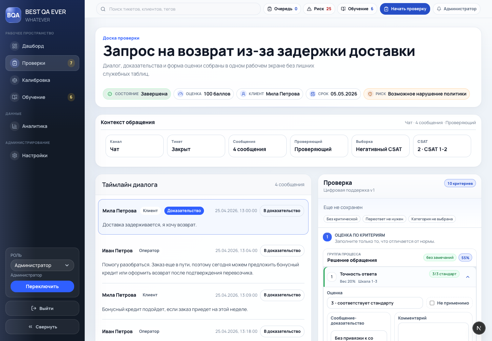
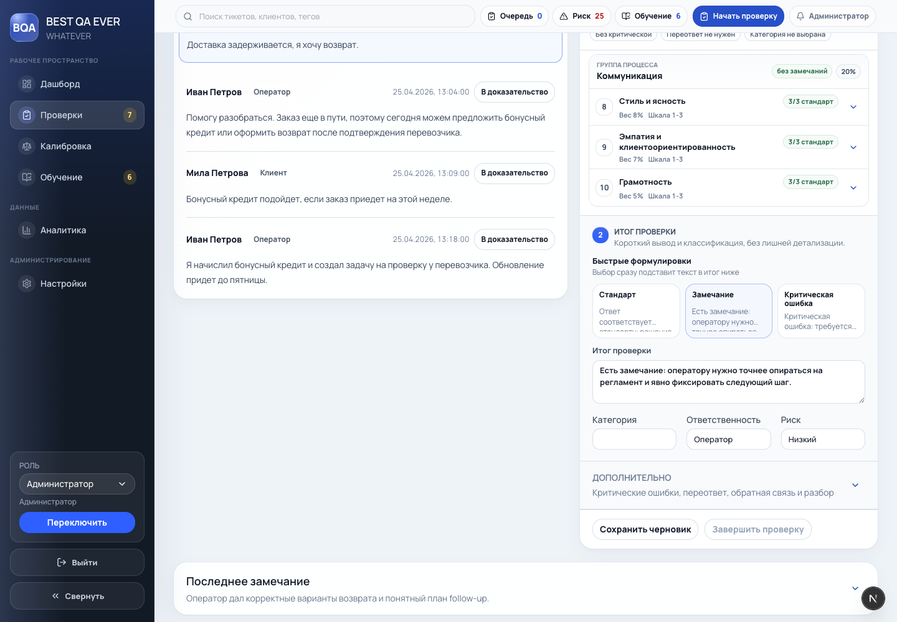

Design Improvement
Review workbench
Главная правка: убрать яркую боковую цветовую рейку из критериев и превратить блок оценки в сканируемый structured list. Статус должен помогать, а не доминировать.
Current state

Текущий дизайн: критерии уже сгруппированы, но цветовые отметки сбоку визуально конкурируют с содержанием и делают список шумным.
Improvement ideas
1. Structured list вместо набора карточек highest impact
Критерии лучше читать как рабочий список: номер, название, метаданные, статус, раскрытие. Это снижает визуальный вес и сохраняет плотность.
Inspired by: Carbon structured list. Carbon описывает structured list как способ группировать похожую информацию в логичные и сканируемые строки.
┌ Группа процесса без замечаний 30% ┐ │ 01 Приветствие и идентификация Вес 10% Да/нет Зачет │ │ 02 Полнота ответа Вес 15% Шкала 1-3 3/3 │ │ 03 Эскалация Вес 10% Да/нет Незачет │ └─────────────────────────────────────────────────────────────────────────┘
2. Спокойные status lozenges вместо цветной полосы
Статусы должны быть компактными текстовыми индикаторами. Цвет нужен только как вторичный сигнал, поэтому фон и бордер должны быть мягкими.
Inspired by: Atlassian lozenge и Carbon tag. Оба паттерна используют компактный статус рядом с объектом, а не декоративную маркировку всей строки.
Название критерия [3/3 стандарт] Метаданные: вес, тип шкалы, доказательство
3. Пресеты итога как действие, а не copy flow
Шаблон итогового комментария должен сразу заполнять поле. Копирование создает лишний шаг и не подходит для формы, где результат уже известен.
Inspired by: Atlassian form guidance: формы должны вести пользователя с минимальным трением, а поля и действия должны быть сгруппированы по смыслу.
Быстрые формулировки [Стандарт] [Замечание] [Критическая ошибка] Итог проверки ┌───────────────────────────────────────────────┐ │ выбранный текст уже здесь │ └───────────────────────────────────────────────┘
Implemented state

После: пресеты подставляют текст напрямую в поле итога. Критерии в коде переведены на спокойные статусные капсулы без боковых цветных реек.
What's working
- Группировка критериев по процессным блокам полезна, ее стоит оставить.
- Sticky review panel хорошо поддерживает рабочий сценарий проверки рядом с диалогом.
- Progressive disclosure для доказательств и комментариев снижает объем формы на первом взгляде.
All references
Паттерн для сканируемых строк похожей информации.
SourceКомпактные метки для статуса и категоризации.
SourceГруппировка полей, ясные labels, минимальное трение.
SourceСтатус рядом с объектом, а не декоративный цвет на всю строку.
Source